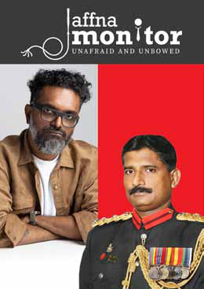

This is Our Soil. And No One Can Take It From Us.
This is Our Soil. And No One Can Take It From Us.
Jaffna Monitor hellojaffnamonitor@gmail.com 3 This is Our Soil. And No One Can Take It From Us. F ebruary 4th, Sri Lanka’s Independence Day, is a day of both celebration and contention. As the nation marked 77 years of sovereignty, some Tamils—whose lands remain militarily occupied and whose sons and daughters have vanished without a trace—chose to observe the day with symbolic defiance. For them, it was a solemn reminder of unresolved grievances, systemic marginalization, and the continued erosion of their fundamental rights. However, another faction—politically opportunistic Tamil nationalists—seized the moment for their own agenda. They operate in the spirit of the Tamil proverb "Gaining from a house on fire" (vupapw tPl;by; GLq;FwJ yhgk;). These elements, heavily bankrolled by segments of the diaspora, sought to manipulate the occasion, not for genuine advocacy, but to sustain their political relevance by perpetuating division. With calculated rhetoric, they deliberately sought to reframe Independence Day as a ‘Black Day,’ fostering resentment rather than reconciliation. The Hypocrisy of Tamil Political Opportunists And then there’s Gajendrakumar Ponnambalam— Colombo-born and bred, a product of Royal College and Colombo International School, an elite wrapped in privilege and affluence. More fluent in Sinhala than Tamil, he has spent much of his life surrounded by Sinhala friends, effortlessly navigating the very society he claims to oppose. And yet, the irony runs deep—his multimillion- dollar investments are not in the war-ravaged Tamil regions he professes to represent, but in Sinhala-majority areas, where his wealth quietly flourishes. Editorial February 15, 2025 Rs. 750 ‘The Military That Fought the War Should Have Been Rehabilitated, Just Like the Surrendered LTTE Cadres’ – Exclusive Interview with Jaffna- born Tamil Major General (Retd.) Hermenagild Lakshman David Fantastical Literature Is the Original Form of Storytelling — Literary Realism Is a 19th- Century Innovation" Exclusive Interview with Vajra Chandrasekera

Jaffna Monitor hellojaffnamonitor@gmail.com 4 Standing beside him is ITAK President-elect Sritharan—once a political adversary, now a convenient ally. Their newfound camaraderie emerged not from ideological alignment but from political survival, triggered by the unexpected rise of the NPP, a Sinhala- majority party that made inroads into the North and East in the last parliamentary election. Sensing a threat, they set aside their differences, united by opportunism rather than principle. On Independence Day, they staged a rally in Kilinochchi—an event that bore all the hallmarks of a diaspora-funded protest, Amidst the protest, Gajendrakumar Ponnambalam stood front and center, hoisting a placard that read: "We reject all political solutions under a unitary state constitution." A bold declaration, one that might have carried weight—if only he truly believed in it. But here lies the glaring paradox. The Oath of Loyalty: Words vs. Actions Every Member of Parliament in Sri Lanka is bound by an oath—a solemn declaration that affirms their commitment to upholding and defending the Constitution of the Democratic Socialist Republic of Sri Lanka. Gajendrakumar Ponnambalam himself has taken this very oath: "I, Gajendrakumar Ponnambalam, do solemnly declare and affirm/swear that I will uphold and defend the Constitution of the Democratic Socialist Republic of Sri Lanka." This Constitution, without ambiguity, defines Sri Lanka as a unitary state. Given his staunch opposition to this framework, one must ask: Why does Gajendrakumar Ponnambalam continue to hold a parliamentary seat within a system he so vehemently denounces? Why does his party actively contest elections under a Constitution he publicly repudiates? If his ideological convictions were sincere, would not integrity demand that he reject the very oath that binds him to this state? The contradiction is glaring. On one hand, he benefits from the privileges and platform provided by the Sri Lankan Parliament. On the other, he relentlessly fuels Tamil discontent, leveraging the same system he claims to oppose. If he truly rejects the unitary state, logic and integrity would dictate that he renounce his parliamentary position, reject the privileges it affords him, and stand by his purported beliefs in their entirety. Instead, his continued participation suggests a strategic exploitation of the system—one that sustains his political relevance while perpetuating division. Such duplicity does not advance the cause of Tamil rights; rather, it undermines genuine discourse by reducing it to a tool for political survival. Tamil Identity and the Struggle for Dignity As a Tamil, as a minority in this land, I carry the weight of history—the wounds of injustice, the scars of systemic discrimination that began long before my time. I have not forgotten the disenfranchisement of Indian Tamils in 1948, a cruel betrayal that stripped an entire people of their voice—ironically, with the backing of G.G. Ponnambalam, the grandfather of Gajendrakumar Ponnambalam. I cannot erase the memory of the Sinhala Only Act in 1956, which deepened our alienation and told us, in no uncertain terms,
Jaffna Monitor hellojaffnamonitor@gmail.com 5 that we did not belong. And I cannot ignore the decades of suffering that followed, the violence, the loss, the unfulfilled dreams of a people who only ever wanted dignity and equality. But tell me—does that mean we must abandon our motherland? Must we turn away from the soil that cradled us, the rivers that whispered our ancestors’ names, the air that carries the scent of our history? No. The sins of politicians do not define this land. It is not the earth beneath our feet that betrayed us— it was men, selfish and power-hungry, who divided us for their own gain. This is our home. No politician, no policy, no oppression can take that away from us. This is the same land where our ancestors shed their blood—not merely in defiance of the Sri Lankan state, but long before that, against foreign invaders who sought to subjugate us. Are we to forsake our heritage because of the challenges we face, or should we stand our ground and fight for our rightful place within this nation? Those who have brazenly declared February 4th a “Black Day” must confront a fundamental question: Was Pandara Vanniyan, our Tamil warrior-hero, a traitor for resisting British imperialism? Should we erase the legacy of countless Tamil warriors who valiantly opposed colonial domination? Is our history to be reduced to selective amnesia, dictated by transient political opportunism? A Path Forward: Rejecting Separatism, Embracing Engagement For three harrowing decades, our community bore the brunt of an unforgiving war. We endured unfathomable sacrifices, widespread devastation, and the annihilation of an entire generation. Nearly 40,000 LTTE cadres— our own sons and daughters of Sri Lanka— were obliterated. Add to that the tens of thousands of Tamil civilians who perished, the multitudes who were displaced, and those brutally executed by the LTTE as ‘traitors,’ and the death toll soars to staggering, almost incomprehensible levels. And let us not forget—ours is a tiny nation. For the Tamil people, this war eradicated nearly 10% of our population. If that weren’t enough, mass migration further hollowed out our communities. Statistical records indicate that Jaffna had a larger population in the 1970s than it does today. Can we even begin to grasp the sheer magnitude of such demographic decimation? The scale of this decline is nothing short of catastrophic. Today, the LTTE is no more. The armed struggle is extinguished and reduced to a relic of the past. There is no battlefield left, no military path to tread. The only pragmatic course is to accept Sri Lanka as our homeland and wage our fight for justice from within. Clinging to the mirage of separatism is not only a delusional fallacy but a suicidal folly— one that will condemn the Tamil people to perpetual stagnation and suffering. History is filled with examples of minorities who embraced national identities and flourished. The Jews in the United States, the Chinese in Malaysia, Muslims in India—none of them dwelled in perpetual grievance. They engaged, adapted, and claimed their rightful place in their nations.
Jaffna Monitor
hellojaffnamonitor@gmail.com
6
For Donations:
Full Name
: JAFFNA MONITOR PUBLICATIONS
Bank Name
: National Development Bank PLC
Branch Name and Address : No.30, KKS Road, Chunnakam, Jaffna
Account Number
: 111000221437
SWIFT Code
: NDBSLKLX
Bank Address
: No.40, Nawam Mawatha, Colombo 2
Need more information?
Call or WhatsApp us at
: +94715418220
Email us at
: hellojaffnamonitor@gmail.com
Likewise, Sri Lanka is our home.
Why should we allow radical
agitators—both within the diaspora
and at home—to manipulate our
destiny?
Tamils, the time has come to move
forward. It is time to reclaim our
rightful place in this nation—not
as rebels, not as exiles, but as Sri
Lankans. We must seize control of
our own destiny, fight to secure our
rights through democratic means,
and build a future where our children
thrive—not in displacement, not in
uncertainty, but here, in the land we
call home.
To the Tamil hardliners who demand
I disown my country, and to the
Sinhala hardliners who deny us our
rightful place within it, hear me:
I draw strength from the words of
Jaguar Paw, son of Flint Sky, in
Apocalypto Movie: "I am Jaguar
Paw, son of Flint Sky. My father
hunted this forest before me. My
name is Jaguar Paw. I am a hunter.
This is my forest. And my sons will
hunt it with their sons after I am
gone."
"I am Kaniyan Pungundran, son
of this ancient soil. My ancestors
walked this land before me, their
footsteps etched into its very soul.
My name is Kaniyan Pungundran.
I am a son of Sri Lanka. This is my
land. And my children will walk
upon it with their children long after
I am gone."
Warm regards,
fzpad; G+q;Fd;wd;
Kaniyan Pungundran
Editor-in-Chief,
Jaffna Monitor